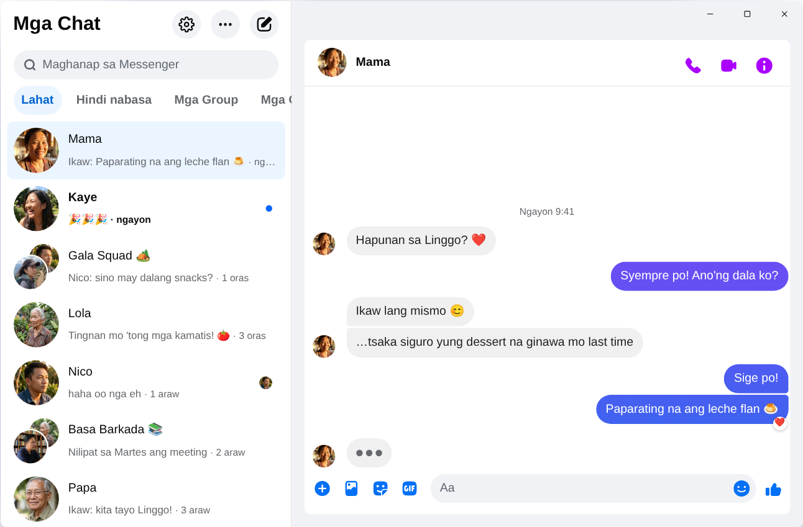

Chatpane / Windows
Na-update noong Nobyembre 2026
Paano gamitin ang Messenger sa laptop o PC ngayong 2026
Itinigil ng Meta ang Messenger app para sa Windows noong Disyembre 15, 2025, at dinadala ka na ng messenger.com sa Facebook. Ito ang mga paraang gumagana pa sa laptop o PC na Windows 10 o 11.
Libre at open source · Windows 10 at 11 · Hindi ito app ng Meta
Maikling sagot
Wala nang official na Messenger app para sa laptop o PC. Tinanggal na ito ng Meta sa Microsoft Store, at mula Abril 2026, sa facebook.com/messages na lang gumagana ang Messenger sa computer, sa loob ng Facebook.
Kung gusto mong may sariling window ang Messenger, walang feed at walang Reels, ang Chatpane ay libre at open-source na app para sa Windows na chats mo lang ang ipinapakita. Independent project ito, hindi gawa ng Meta.
Bakit hindi na gumagana ang mga lumang tutorial
Maraming tutorial pa rin ang nagsasabing hanapin ang "Messenger" sa Microsoft Store, o mag-download ng Messenger 2250.1 installer sa mga download site. Hindi na iyon gagana: iyon mismo ang app na itinigil ng Meta noong Disyembre 2025, at dinadala ka lang nito sa Facebook pagbukas mo.
Huwag ding ilagay ang Facebook password mo sa app o website na hindi mo alam kung saan galing. Kung may nag-aalok ng "Messenger for PC" na may sariling login, mag-ingat.
Ano ang nangyari sa Messenger para sa Windows?
Noong 2024, pinalitan ng Meta ang Windows app ng naka-package na web version. Noong Oktubre 2025, inanunsyo nitong ititigil na ang app at tinanggal ito sa Microsoft Store, at noong Disyembre 15, 2025, tuluyan na itong huminto. Noong Abril 2026, isinara na rin ang messenger.com. Nasa ano ang nangyari sa Messenger sa PC ang mga detalye at petsa.
Mga pagpipilian
Mga paraan para mag-Messenger sa Windows
Chatpane sa Windows
Ang Chatpane ay ang parehong Messenger na nakikita mo sa browser, kaya nandiyan lahat ng chats, GC, calls at photos mo, at naka-sync sa phone mo. Ang tinatanggal lang nito ay ang iba pang bahagi ng Facebook.
- Messenger lang. Nakatago ang feed, Reels, Marketplace at search ng Facebook, kaya hindi ka madi-distract habang nag-aaral o nagtatrabaho.
- Notifications na may silbi. Mag-reply, mag-react, i-mark as read o i-mute ang chat mula sa notification, hindi na kailangang buksan ang window. Swak para sa mga GC sa school o trabaho.
- Taskbar at system tray. Bilang ng unread sa icon, sabay na bumubukas sa Windows, at tuloy pa rin sa system tray kahit isara ang window.
- Privacy. Itago na nagta-type ka, itago ang mga pangalan at profile picture kapag nagse-screen share, at i-block ang analytics requests ng Facebook (naka-on na).
- Sa wika mo. Sinusunod ng Chatpane ang language ng computer mo, kaya puwedeng nasa Filipino ang menu at settings nito.

Paano i-install
- I-download ang installer para sa Windows. Kung ARM ang processor ng laptop mo, gamitin ang ARM64 installer.
- Buksan ito. Wala pang digital signature ang mga Windows installer ng Chatpane, kaya puwedeng lumabas ang "Windows protected your PC" ng SmartScreen. I-click ang "More info", tapos "Run anyway". Sa chatpane.app o GitHub lang mag-download ng Chatpane.
- Mag-log in gamit ang Facebook account mo. Lalabas agad ang mga chat mo.
Ayaw mong mag-install? Gumagana ang portable version (.zip) kahit walang installer.
FAQ
Mga tanong tungkol sa Messenger sa PC
Libre ba ang Chatpane?
Oo. Walang bayad, walang subscription, walang ads. Open source ito sa ilalim ng MIT license, at nasa GitHub ang code para masuri ng kahit sino.
Official na Messenger app ba ito?
Hindi. Independent project ang Chatpane at walang kaugnayan sa Meta. Ipinapakita nito ang totoong Messenger mula sa facebook.com/messages sa sariling window, kaya dumadaan pa rin sa Messenger ang mga message mo at sakop pa rin ng terms ng Meta.
Gagana ba kahit walang Facebook account?
Hindi. Mula Abril 2026, sa mobile app na lang puwedeng mag-Messenger nang walang Facebook account. Sa computer, kailangan ng Chatpane at ng lahat ng ibang paraan ang account na nakakapag-log in sa facebook.com.
Gagana ba sa Windows 10?
Oo, sa Windows 10 at 11. Gumagamit ang Chatpane ng Microsoft Edge WebView2, na kasama na sa Windows 11. Sa Windows 10, ida-download ito ng installer kung wala pa.
Puwede bang mag-video call?
Oo. Buong Messenger ito, kaya bumubukas ang voice at video calls sa sariling window, gaya sa facebook.com.
Kunin ang Chatpane
Libre at open source. Ilang segundo lang ang download - mga 4 MB lang ito.
Mayroon ding: portable .zip · ARM .exe · ARM .zip
Mas lumang Intel Mac? Intel .dmg
Ang buong listahan na may mga checksum ay nasa
GitHub
- o brew install --cask kristofferR/tap/chatpane